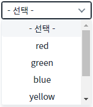
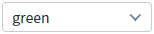
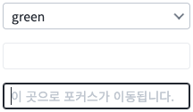
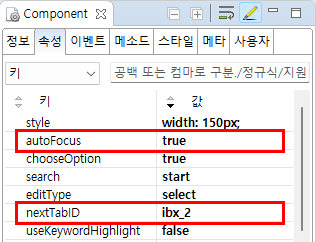

AutoComplete의 'autoFocus' 속성을 사용하여, 검색어 입력 필드에 목록의 항목과 일치하는 값이 입력되면, 'nextTabID' 속성에 설정된 컴포넌트로 포커스가 이동하도록 설정된 예제입니다.
이 기능은 목록에서 항목을 클릭(선택)한 경우에는 동작하지 않습니다. 입력 필드에서 동일한 값을 입력했을 때 동작합니다.
선택 목록의 값과 일치하는 값을 입력하면 설정한 컴포넌트로 포커스를 이동시키기
1
STEP 1: 초기 상태 확인하기
목록을 확인합니다.
Image 1.브라우저(Chrome) 실행 예시

2
STEP 2: 컴포넌트의 입력 필드에 항목에 표시된 문자열을 입력합니다.
'green'을 입력합니다.(항목의 값을 모두 입력해야합니다. 자동 완성된 항목을 선택하는 경우는 포커스가 이동되지 않습니다.)
Image 2.브라우저(Chrome) 실행 예시

3
STEP 3: 실행 결과를 확인합니다.
포커스가 두 번째 Input으로 이동된 것을 확인합니다.
Image 3.브라우저(Chrome) 실행 예시

1
컴포넌트의 속성을 정의합니다.
[필수] autoFocus="true"
사용자가 입력한 값이 선택 목록의 값과 정확하게 일치할 경우, nextTabID로 지정된 컴포넌트로 (100ms 이후) 포커스가 이동됩니다.
[필수] nextTabId="포커스가 이동될 컴포넌트의 아이디"
포커스가 이동될 컴포넌트의 아이디.
Image 4.웹스퀘어 스튜디오의 Component View 예시

Example 1.Source
<w2:autoComplete nextTabID="ibx_2" autoFocus="true"> <!-- 중략 --> </w2:autoComplete>
autoFocus
nextTabID